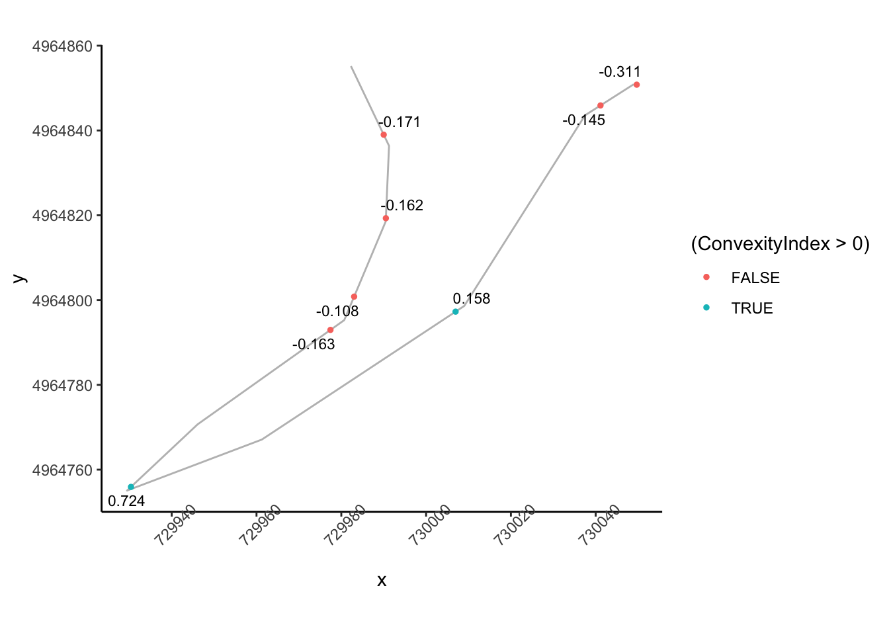

20 Automatically Generating Stage Descriptions
Having annotated each line segment that makes up a rally stage route, can we use that information to help us create visual or even written, descriptions of a stage?
In terms of categorising turns in a way that’s meaningful in a rally context, let’s have a recap on what sorts of thing a rally navigator or co-driver is likely to be saying:
embed_url("https://www.youtube.com/watch?v=KFjRj25uclQ")And let’s review what we actually mean by a corner…
embed_url("https://www.youtube.com/watch?v=YXOYckDATWE")In terms of actual corners, the convexity interesting may be one of the more interesting properties. Finding a good way of representing variable radius turns (you did watch the “corners” video, didn’t you?!) will also be important if we want to be able to identify “tightens” or “lessens” (that is, “opens”) corner features. Any elevation changes in the vicinity of a corner are likely to be important if we are trying to characterise braking zone requirements…
20.1 Jemba Inertia Notes System
In a section entitled Using data to assess the suitability of a special stage, the FIA Rally Safety Guidelines 2020 suggest that as well as using historic information, the “Jemba System” for recording terrain data, including “the inclines, the dips, the bends and crests”. By also taking the road terrain (for example, gravel or asphalt) into account, and likely car classes, average speeds over the stage as well as highest speed and heaviest braking areas can also be determined. THe system can also report the margin for critical braking dist before stop (“how far you may carry on at competitive speed until you have to start braking to be able to stop at the stop control”) and the Jemba Safety Index (J/kg), the average kinetic energy of a car going through the corners.
The FIA Safety Guidelines illustrate how speeds might be visualised over a Google Earth map using a three colour scale (purple:over 150kph; red: over 90kph; yellow – 7590kph). The report also suggests that the Jemba system can predict the maximum cornering speed for any particular bend.
A Wikipedia page describing the Jemba Inertia Notes System gives examples of the descriptive and numerical labels that the Jemba system can generate as it converts odometry and accelerometer data into something rather more human understandable. A visual grading shows how descriptive labels correspond to turn angle.
{kind=link}
20.2 Generating Stage Descriptions
Being able to display route profiles on a map as colour highlighted routes is very useful and could be made more so adding the data to a leaflet.js extension such as Leaflet.Heightgraph, which displays arbitrary traces (to integrate this in the current workflow properly would require the development of an extension to the R leaflet package).
Another possibility would be to try to automate the creation of text based route descriptions (“robot journalism”), which I’ve crudely explored in other contexts elsewhere. The It Gets Faster Now blog publishes stage descriptions for WRC stage routes, so this could be a good place to learn tropes from.
20.3 Load in Base Data
As ever, let’s load in our stage data and the elevation raster and create a demo map:
library(sf)
library(raster)
library(rayshader)
geojson_filename = 'montecarlo_2021.geojson'
geojson_sf = sf::st_read(geojson_filename)## Reading layer `montecarlo_2021' from data source `/Users/tonyhirst/Documents/GitHub/visualising-rally-stages/montecarlo_2021.geojson' using driver `GeoJSON'
## Simple feature collection with 9 features and 2 fields
## geometry type: LINESTRING
## dimension: XY
## bbox: xmin: 5.243488 ymin: 43.87633 xmax: 6.951953 ymax: 44.81973
## geographic CRS: WGS 84stage_route_gj = geojsonio::geojson_json(geojson_sf[1,]$geometry)
# Previously downloaded TIF digital elevation model (DEM) file
stage_tif = "stage_elevation.tif"
# Load in the previously saved image raster
elev_img = raster(stage_tif)
# Note we can pass in a file name or a raster object
elmat = raster_to_matrix(stage_tif)## [1] "Dimensions of matrix are: 382x565."demo_map = elmat %>%
sphere_shade(texture = "desert",
progbar = FALSE)Let’s also get a UTM projection of the stage routes:
# Detect the UTM zone as an EPSG code
lonlat2UTMzone = function(lonlat) {
utm = (floor((lonlat[1] + 180) / 6) %% 60) + 1
if(lonlat[2] > 0) {
utm + 32600
} else{
utm + 32700
}
}
get_utm_projection = function(routes){
# Keep track of the original proj4 string
old_crs = st_crs(geojson_sf[1,])$proj4string
sample_location_x = st_coordinates(st_centroid(routes[1,]))[1]
sample_location_y = st_coordinates(st_centroid(routes[1,]))[2]
# Generate a new projection in the appropriate UTM zone
crs_zone = lonlat2UTMzone(c(sample_location_x,
sample_location_y))
new_proj4_string = st_crs(crs_zone)$proj4string
# Transform the route to the UTM projection
utm_routes = st_transform(geojson_sf, crs=new_proj4_string)
utm_routes
# Or should we returned a named list
# e.g. including the original projection?
#list(utm_routes = utm_routes, orig_crs=old_crs)
}
utm_routes = get_utm_projection(geojson_sf)20.4 Identifying Corners Based on trajr Step Gradients
Let’s start by trying to identify straight sections. Trivially, given that the stage route is given by a linestring made of straight line segments arranged at different angles relative to each other, every line segment is a straight. So what we really mean by a straight is a sequence of connected lines segments where each line segment is at an angle less than +/- 5 degrees to the to segment before it, for example, where the start of the straight has a preceding segment more than +/- 5 degrees to it (for example) and the end of the straight has a following line segment at more than +/- five degrees to it.
Let’s use the trajr stepangle to try to categorise straights:
library(trajr)
trj <- TrajFromCoords(as.data.frame(st_coordinates(utm_routes[1,])))
# Remove duplicate x,y rows - assume non-crossing route]
# Should probably flag this removal via a warning
trj = trj[!duplicated(trj[,c('x','y')]),]
# displacement is a complex number, so we can get the actual distance:
trj$distance = Mod(trj$displacement)
# Find the accumulated distance at each step
trj$cum_dist = cumsum(trj$distance)
# Step angle in radians relative to previous
trj$stepangle = c(0, TrajAngles(trj, compass.direction = NULL) * 180 / pi, NA)
trj$cumstepangle = cumsum(c(0, TrajAngles(trj, compass.direction = NULL) * 180 / pi, NA))
trj$stepheading = c(TrajAngles(trj, compass.direction = 0)* 180 / pi, NA)
# Find the gradient of the accumulated angle
trj$step_gradient = pracma::gradient(trj$cumstepangle, trj$cum_dist)We can view the gradients:
g = ggplot(data=trj,
aes(x=x, y=y)) + geom_path(color='grey') + coord_sf()
g + geom_point( size=0.2, color='blue',
data=trj[trj$step_gradient>0.2,]) +
geom_point(size=0.2,
data=trj[trj$step_gradient<=-0.2,],
color='red')
If we have several consecutive points with a gradient of the same sign, then we might consider them to be part of the same corner, albeit one that maybe tightens or opens. If the gradients of consecutive segments have a different sign, then we have a change of direction from e.g. left to right or right to left.
We can create a flag that identifies when the sign changes across consecutive rows of the step_gradient column. We can check this by lagging the contents of the step_gradient column by one step using the dplyr::lag() function and comparing its sign to the sign of the unlagged value. If we then dplyr::lead() the result, we can see if a change in direction happens at the end of a step:
trj = trj %>%
mutate(dirChange = lead(sign(step_gradient) != sign(lag(step_gradient))))
head(trj[,c('step_gradient', 'dirChange')])## step_gradient dirChange
## 1 0.02722146 FALSE
## 2 0.43059007 FALSE
## 3 1.18714584 FALSE
## 4 1.94367547 FALSE
## 5 1.42337267 TRUE
## 6 -0.07676768 FALSELet’s plot points on the route where we seem to have a direction change:
g +
geom_point( size=0.2, color='blue',
data=trj[trj$dirChange,]) +
theme(axis.text.x = element_text(angle = 45))Let’s zoom in a bit:
# Zoom in on part of the route
zoom1 = trj$y>4964000 & trj$y<4965000
g1 = ggplot(data=trj[zoom1, ],
aes(x=x, y=y)) + geom_path(color='grey') + coord_sf()
g1 + geom_point( size=0.2, color='blue',
data=trj[zoom1 & trj$dirChange,]) +
theme(axis.text.x = element_text(angle = 45)) We notice that we seem to be missing some corners that are perhaps not direction changes, but significant angle changes in the same direction. And we also notice a direction change flagged in what appears to be the middle of a straight.
We notice that we seem to be missing some corners that are perhaps not direction changes, but significant angle changes in the same direction. And we also notice a direction change flagged in what appears to be the middle of a straight.
Let’s look at the apparent turn in the middle of the straight first. If we have opposing angles from one segment to the next, then we currently class the first point as a corner because the direction has changed. But we aren’t really interested in slight direction changes or even slight direction changes in the same direction.
slight_gradient = 0.35
large_angle = 20
trj = trj %>%
mutate(straightish = (abs(step_gradient) < slight_gradient) &
(stepangle < large_angle))
ggplot(data=trj[zoom1, ],
aes(x=x, y=y)) + geom_path(color='grey') + coord_sf() +
geom_point( size=1, aes(color = straightish)) +
theme(axis.text.x = element_text(angle = 45))
We now want to identify the first node in a close sequence of nodes that identify a turn that doesn’t change direction.
Which is to say we want a not straightish node whose next node is nearby and not straightish and in the same direction, or not nearby:
# Close distance threshold
closeby = 25
trj = trj %>%
mutate(nearby = (distance < closeby) ) %>%
mutate(firstish = !straightish &
((nearby & !lag(straightish) & lag(dirChange)) |
(!nearby) ) )
ggplot(data=trj[zoom1, ],
aes(x=x, y=y)) + geom_path(color='grey') + coord_sf() +
geom_point( size=1, aes(color = firstish)) +
theme(axis.text.x = element_text(angle = 45))
That’s identifying some of the corners, but what’s going on top left?
zoom2 = zoom1 & trj$x<730100
ggplot(data=trj[zoom2,],
aes(x=x, y=y)) + geom_path(color='grey') + coord_sf() +
geom_point( size=1, aes(color = firstish)) +
theme(axis.text.x = element_text(angle = 45))Ah, ok, maybe we could categorise those as turns, but perhaps gentle ones. We maybe need to flag these as “flowing” if they aren’t too tight and have a long run in and out:
tight_gradient = 0.5
trj = trj %>%
mutate(significant = abs(step_gradient) > tight_gradient ) %>%
mutate(flowing = !nearby & !lead(nearby) &
!straightish & !significant )
ggplot(data=trj[zoom2,],
aes(x=x, y=y)) + geom_path(color='grey') + coord_sf() +
geom_point( size=3, aes(color = flowing,
shape = dirChange)) +
theme(axis.text.x = element_text(angle = 45))We can also tweak firstish to recognise significance:
trj = trj %>%
mutate(firstish = (significant & !lag(significant)) |
(!straightish &
((nearby & !lag(straightish) & lag(dirChange)) |
(!nearby) ) )) %>%
# Desensitise firstish
mutate(firstish = firstish & !(lag(firstish)))And how about over a wider part of the stage?
ggplot(data=trj[zoom1, ],
aes(x=x, y=y)) + geom_path(color='grey') + coord_sf() +
geom_point( size=2, aes(color = firstish,
shape = flowing)) +
theme(axis.text.x = element_text(angle = 45))
We could also then create a !flowing & firstish flag to provide better indexing of the starts of corners.
We’d need to test the approach on further stages to see whether it gives false positives or false negatives on identifying various corners, and we’d maybe also want to try to identify tightens and opens.
Let’s have a go at tightens. At a first approximation, a corner tightens if a node isn’t firstish, is above a certain gradient, is close to the previous step and the magnitude of the gradient has increased and is the same sign as the previous step:
trj = trj %>%
mutate(tightens = !firstish & significant & lead(nearby) &
((sign(lead(step_gradient))==sign(step_gradient)) & (abs(lead(stepangle)) > abs(step_gradient))))
ggplot(data=trj[zoom1, ],
aes(x=x, y=y)) + geom_path(color='grey') + coord_sf() +
geom_point( size=2, aes(color = tightens,
shape = firstish)) +
theme(axis.text.x = element_text(angle = 45))The corner opens (“lessens”) if a node isn’t firstish, is above a certain gradient, is close to the previous step and the gradient is in the same direction and has decreased:
trj = trj %>%
mutate(opens = !firstish & significant & lead(nearby) &
((sign(lead(step_gradient))==sign(step_gradient)) & (abs(lead(stepangle)) < abs(step_gradient))))
ggplot(data=trj[zoom1, ],
aes(x=x, y=y)) + geom_path(color='grey') + coord_sf() +
geom_point( size=2, aes(color = opens,
shape = firstish)) +
theme(axis.text.x = element_text(angle = 45))We might also try for “continues” if the angle is about the same gradient but not tightening.
20.5 Identifying Straights
One of the important considerations when assessing a stage is identifying the fast areas of the stage represented by significant straights. So how can we identify a straight?
One way might be to define a simple rule that identifies a straight as a sequence of straightish segments that appear between segments that are not straightish.
We can create such groupings by flagging the presence of the start of a potential run of straightish segments. We can then number each start and propagate this run number down the following segments until the next straight segment is reached. We can then number all non-straighish elements with a “not straight” count number (e.g. -1).
trj = trj %>% mutate(startStraight = lag(!straightish, default=TRUE) & straightish) %>%
mutate(strcount = cumsum(startStraight))
trj$strcount[!trj$straightish] = -1
trj[, c('straightish', 'startStraight', 'strcount', 'distance')]## straightish startStraight strcount distance
## 1 TRUE TRUE 1 0.000000
## 2 FALSE FALSE -1 22.576096
## 3 FALSE FALSE -1 27.939693
## 4 FALSE FALSE -1 21.006147
## 5 FALSE FALSE -1 20.385688
## 6 TRUE TRUE 2 21.776253
## 7 FALSE FALSE -1 39.225069
## 8 TRUE TRUE 3 28.173437
## 9 TRUE FALSE 3 176.799671
## 10 FALSE FALSE -1 34.213905
## 11 FALSE FALSE -1 33.435610
## 12 FALSE FALSE -1 33.180079
## 13 TRUE TRUE 4 32.988458
## 14 FALSE FALSE -1 32.653388
## 15 FALSE FALSE -1 30.955250
## 16 TRUE TRUE 5 52.133335
## 17 TRUE FALSE 5 254.411703
## 18 FALSE FALSE -1 41.724705
## 19 FALSE FALSE -1 89.520784
## 20 FALSE FALSE -1 15.962401
## 21 FALSE FALSE -1 16.560182
## 22 FALSE FALSE -1 18.258302
## 23 TRUE TRUE 6 85.379552
## 24 TRUE FALSE 6 32.448662
## 25 TRUE FALSE 6 51.783361
## 26 FALSE FALSE -1 102.162288
## 27 FALSE FALSE -1 29.056251
## 28 TRUE TRUE 7 30.779766
## 29 FALSE FALSE -1 74.149638
## 30 TRUE TRUE 8 30.943330
## 31 TRUE FALSE 8 85.171697
## 32 FALSE FALSE -1 51.410943
## 33 TRUE TRUE 9 65.299139
## 34 FALSE FALSE -1 33.110534
## 35 FALSE FALSE -1 34.904722
## 36 TRUE TRUE 10 62.641285
## 37 TRUE FALSE 10 79.381427
## 38 TRUE FALSE 10 50.463921
## 39 FALSE FALSE -1 45.234343
## 40 TRUE TRUE 11 24.320789
## 41 FALSE FALSE -1 28.123378
## 42 TRUE TRUE 12 29.680685
## 43 FALSE FALSE -1 62.350861
## 44 FALSE FALSE -1 8.561852
## 45 FALSE FALSE -1 19.176687
## 46 FALSE FALSE -1 51.746203
## 47 FALSE FALSE -1 9.929782
## 48 FALSE FALSE -1 25.986880
## 49 TRUE TRUE 13 24.790260
## 50 TRUE FALSE 13 200.394033
## 51 TRUE FALSE 13 79.003846
## 52 TRUE FALSE 13 101.740035
## 53 TRUE FALSE 13 51.526089
## 54 FALSE FALSE -1 78.114767
## 55 TRUE TRUE 14 25.987677
## 56 FALSE FALSE -1 28.443655
## 57 TRUE TRUE 15 30.354745
## 58 FALSE FALSE -1 45.272690
## 59 TRUE TRUE 16 30.072585
## 60 FALSE FALSE -1 118.383431
## 61 TRUE TRUE 17 18.073097
## 62 FALSE FALSE -1 57.463884
## 63 TRUE TRUE 18 22.527126
## 64 FALSE FALSE -1 71.698716
## 65 TRUE TRUE 19 19.073636
## 66 TRUE FALSE 19 33.669783
## 67 TRUE FALSE 19 100.195791
## 68 TRUE FALSE 19 54.629746
## 69 TRUE FALSE 19 81.943726
## 70 TRUE FALSE 19 82.769644
## 71 TRUE FALSE 19 88.612474
## 72 TRUE FALSE 19 64.939488
## 73 TRUE FALSE 19 58.082143
## 74 TRUE FALSE 19 31.622830
## 75 TRUE FALSE 19 44.266782
## 76 FALSE FALSE -1 32.481888
## 77 TRUE TRUE 20 35.795692
## 78 TRUE FALSE 20 93.700955
## 79 TRUE FALSE 20 74.648418
## 80 TRUE FALSE 20 87.518624
## 81 TRUE FALSE 20 39.425264
## 82 FALSE FALSE -1 34.453996
## 83 TRUE TRUE 21 22.856731
## 84 TRUE FALSE 21 155.837831
## 85 TRUE FALSE 21 59.493071
## 86 TRUE FALSE 21 54.692563
## 87 FALSE FALSE -1 41.676102
## 88 TRUE TRUE 22 20.134693
## 89 FALSE FALSE -1 42.504888
## 90 FALSE FALSE -1 10.319788
## 91 FALSE FALSE -1 10.082093
## 92 FALSE FALSE -1 19.947176
## 93 FALSE FALSE -1 16.696573
## 94 TRUE TRUE 23 15.147739
## 95 FALSE FALSE -1 36.072187
## 96 TRUE TRUE 24 30.108972
## 97 FALSE FALSE -1 66.401404
## 98 FALSE FALSE -1 31.078879
## 99 TRUE TRUE 25 32.097088
## 100 TRUE FALSE 25 70.861823
## 101 TRUE FALSE 25 78.076153
## 102 TRUE FALSE 25 107.148370
## 103 TRUE FALSE 25 30.689626
## 104 FALSE FALSE -1 37.068369
## 105 FALSE FALSE -1 23.433769
## 106 FALSE FALSE -1 35.736928
## 107 TRUE TRUE 26 10.809889
## 108 FALSE FALSE -1 41.278750
## 109 FALSE FALSE -1 21.243105
## 110 TRUE TRUE 27 25.242190
## 111 TRUE FALSE 27 48.187023
## 112 TRUE FALSE 27 66.565053
## 113 TRUE FALSE 27 110.173299
## 114 TRUE FALSE 27 99.330798
## 115 FALSE FALSE -1 29.736978
## 116 TRUE TRUE 28 43.479484
## 117 TRUE FALSE 28 37.302236
## 118 FALSE FALSE -1 52.131224
## 119 FALSE FALSE -1 54.558722
## 120 FALSE FALSE -1 22.235672
## 121 TRUE TRUE 29 22.448675
## 122 TRUE FALSE 29 89.531050
## 123 FALSE FALSE -1 112.844215
## 124 FALSE FALSE -1 28.208403
## 125 TRUE TRUE 30 29.689502
## 126 TRUE FALSE 30 64.716386
## 127 TRUE FALSE 30 47.552609
## 128 FALSE FALSE -1 40.762039
## 129 FALSE FALSE -1 24.293957
## 130 FALSE FALSE -1 55.480416
## 131 TRUE TRUE 31 18.609341
## 132 FALSE FALSE -1 57.742931
## 133 FALSE FALSE -1 17.900876
## 134 FALSE FALSE -1 24.657085
## 135 FALSE FALSE -1 3.910547
## 136 FALSE FALSE -1 6.281999
## 137 FALSE FALSE -1 22.208888
## 138 FALSE FALSE -1 56.046544
## 139 TRUE TRUE 32 18.390054
## 140 TRUE FALSE 32 111.373808
## 141 TRUE FALSE 32 125.767864
## 142 TRUE FALSE 32 66.618897
## 143 FALSE FALSE -1 29.975148
## 144 FALSE FALSE -1 28.384868
## 145 FALSE FALSE -1 40.239085
## 146 FALSE FALSE -1 13.838288
## 147 FALSE FALSE -1 15.598591
## 148 FALSE FALSE -1 46.091581
## 149 FALSE FALSE -1 23.500236
## 150 TRUE TRUE 33 24.854582
## 151 TRUE FALSE 33 42.943277
## 152 TRUE FALSE 33 59.516315
## 153 FALSE FALSE -1 27.085080
## 154 FALSE FALSE -1 86.155677
## 155 FALSE FALSE -1 13.499961
## 156 FALSE FALSE -1 6.781840
## 157 TRUE TRUE 34 17.789179
## 158 TRUE FALSE 34 68.720036
## 159 TRUE FALSE 34 46.517087
## 160 TRUE FALSE 34 84.947862
## 161 TRUE FALSE 34 134.380640
## 162 TRUE FALSE 34 170.177457
## 163 FALSE FALSE -1 88.585179
## 164 FALSE FALSE -1 17.936243
## 165 FALSE FALSE -1 21.604093
## 166 FALSE FALSE -1 39.653677
## 167 FALSE FALSE -1 27.667933
## 168 FALSE FALSE -1 79.679163
## 169 FALSE FALSE -1 13.988367
## 170 FALSE FALSE -1 13.865176
## 171 FALSE FALSE -1 22.728199
## 172 FALSE FALSE -1 20.813460
## 173 FALSE FALSE -1 8.714071
## 174 FALSE FALSE -1 10.860020
## 175 FALSE FALSE -1 25.095519
## 176 FALSE FALSE -1 18.796776
## 177 TRUE TRUE 35 18.592286
## 178 FALSE FALSE -1 73.171879
## 179 TRUE TRUE 36 18.603466
## 180 TRUE FALSE 36 95.265566
## 181 FALSE FALSE -1 50.723320
## 182 FALSE FALSE -1 20.362347
## 183 TRUE TRUE 37 46.707566
## 184 FALSE FALSE -1 26.893695
## 185 FALSE FALSE -1 62.138755
## 186 FALSE FALSE -1 15.898919
## 187 FALSE FALSE -1 15.380670
## 188 FALSE FALSE -1 8.399971
## 189 TRUE TRUE 38 19.153761
## 190 TRUE FALSE 38 32.612671
## 191 TRUE FALSE 38 69.641579
## 192 FALSE FALSE -1 77.022940
## 193 FALSE FALSE -1 17.922554
## 194 FALSE FALSE -1 17.353440
## 195 TRUE TRUE 39 17.998275
## 196 TRUE FALSE 39 31.483513
## 197 FALSE FALSE -1 30.179470
## 198 FALSE FALSE -1 8.963272
## 199 TRUE TRUE 40 19.384632
## 200 FALSE FALSE -1 39.132116
## 201 TRUE TRUE 41 48.257443
## 202 TRUE FALSE 41 32.451880
## 203 FALSE FALSE -1 80.460236
## 204 TRUE TRUE 42 28.347748
## 205 TRUE FALSE 42 46.430039
## 206 TRUE FALSE 42 43.567374
## 207 TRUE FALSE 42 46.393037
## 208 FALSE FALSE -1 25.224961
## 209 FALSE FALSE -1 43.088705
## 210 FALSE FALSE -1 31.923523
## 211 FALSE FALSE -1 10.849289
## 212 FALSE FALSE -1 12.114653
## 213 TRUE TRUE 43 17.572277
## 214 FALSE FALSE -1 59.816627
## 215 FALSE FALSE -1 33.021708
## 216 TRUE TRUE 44 18.460152
## 217 FALSE FALSE -1 20.971806
## 218 FALSE FALSE -1 23.966974
## 219 FALSE FALSE -1 23.572275
## 220 FALSE FALSE -1 25.137897
## 221 FALSE FALSE -1 26.873206
## 222 FALSE FALSE -1 24.681305
## 223 FALSE FALSE -1 22.047708
## 224 FALSE FALSE -1 21.229788
## 225 FALSE FALSE -1 9.116143
## 226 FALSE FALSE -1 17.934112
## 227 FALSE FALSE -1 22.204232
## 228 FALSE FALSE -1 24.805501
## 229 FALSE FALSE -1 26.569158
## 230 TRUE TRUE 45 49.681680
## 231 TRUE FALSE 45 29.486036
## 232 FALSE FALSE -1 43.292373
## 233 FALSE FALSE -1 25.696007
## 234 FALSE FALSE -1 6.012008
## 235 TRUE TRUE 46 13.917710
## 236 FALSE FALSE -1 27.871234
## 237 FALSE FALSE -1 46.206343
## 238 FALSE FALSE -1 20.573803
## 239 FALSE FALSE -1 22.761959
## 240 FALSE FALSE -1 25.593368
## 241 FALSE FALSE -1 5.734797
## 242 FALSE FALSE -1 5.551412
## 243 FALSE FALSE -1 14.287284
## 244 FALSE FALSE -1 44.592234
## 245 FALSE FALSE -1 26.502139
## 246 FALSE FALSE -1 47.573393
## 247 FALSE FALSE -1 31.386847
## 248 FALSE FALSE -1 19.538209
## 249 TRUE TRUE 47 36.943922
## 250 TRUE FALSE 47 88.755110
## [ reached 'max' / getOption("max.print") -- omitted 169 rows ]Having identified straights, we realise that what we are actually interested in are long straights. The length of each straight can be found by grouping segments by straight number and summing the distances of segments within each group:
straight_lengths = trj %>%
# We only want straightish segments...
dplyr::filter(strcount>=0) %>%
# Group by straight number
group_by(strcount) %>%
# Find the length of each straight
summarize(strdistance = sum(distance))
straight_lengths## # A tibble: 77 x 2
## strcount strdistance
## * <dbl> <dbl>
## 1 1 0
## 2 2 21.8
## 3 3 205.
## 4 4 33.0
## 5 5 307.
## 6 6 170.
## 7 7 30.8
## 8 8 116.
## 9 9 65.3
## 10 10 192.
## # … with 67 more rowsLet’s now filter our long straights, eg straights at least 200m long
longstraights = straight_lengths %>%
dplyr::filter(strdistance>=200)
head(longstraights, n=3)## # A tibble: 3 x 2
## strcount strdistance
## <dbl> <dbl>
## 1 3 205.
## 2 5 307.
## 3 13 457.Let’s see how those look:
ggplot(data=trj,
aes(x=x, y=y)) + geom_path(color='grey') + coord_sf() +
geom_point(data=trj[(trj$startStraight) &
(trj$strcount %in% longstraights$strcount),],
aes(x=x, y=y), color='black', size=1) +
geom_point(data=trj[(!trj$startStraight) &
(trj$strcount %in% longstraights$strcount),],
aes(x=x, y=y), color='darkgrey', size=0.5) +
geom_point(data=trj[(trj$firstish),],
aes(x=x, y=y), color='pink', size=0.5) +
theme_classic() +
theme(axis.text.x = element_text(angle = 45)) 20.6 Plotting Trajectory Segments
It will be convenient to be able ot plot segments of a trajectory for particular stretches of a route, so let’s create a function that helps us do that:
trj_segment_plot = function(trj, start, end,
x='x', y='y',
title='', fix_coords=TRUE,
rotate=NULL,
gradients=0, gradient_size=2) {
# Create the route distance filter limits
segment_filter = trj$cum_dist >= start &
trj$cum_dist <= end
# Filter the route
route_segment = trj[segment_filter,]
if (!is.null(rotate))
route_segment = TrajRotate(route_segment,
angle = rotate,
relative = TRUE)
# Generate the stylised route plot
g = ggplot(route_segment) +
geom_path(aes_string(x=x, y=y)) +
# Add a marker to show the start of the segment
geom_point(data=head(route_segment,n=1),
aes_string(x=x, y=y)) +
theme_void()
# Add a title
title=as.character(title)
if (startsWith(title,'auto::')) {
title = stringr::str_split(title,'::')[[1]][2]
title_ = paste0(start/1000, '-', end/1000, 'km')
if (title!='')
title = paste(title, title_)
else
title = title_
}
if (title!='')
g = g + ggtitle(title)
if (fix_coords)
g = g + coord_fixed()
if (gradients)
g = g+ geom_point(aes_string(x=x, y=y),
size=gradient_size, color='blue',
data=route_segment[route_segment$step_gradient>gradients,]) +
geom_point(aes_string(x=x, y=y), size=gradient_size,
data=route_segment[route_segment$step_gradient<=-gradients,],
color='red')
g
}We can then plot a trajectory as follows, optionally rotatint the segment to a horizontal left-right orientation:
# Show a specified segment
trj_segment_plot(trj, 9000, 12500, title='auto::SS1', rotate=TRUE)20.6.1 Segmenting the Route
We can automate the production of a single chart that will display the route a section at a time. This requires segmenting the route, then for each segment, generating the plot, which we add to a list of plots.
# The final section goes to the end of the route
trj_segment_multiplot = function(trj, i, title='',
x='x', y='y',
final=FALSE,
segment_length = 1000,
prefix_dist = 20,
gradients=0, gradient_size=1,
fix_coords=FALSE, rotate=NULL){
# Preface the start of the stage with a 20m lead
start_prefix = prefix_dist
start = segment_length*(i-1)-start_prefix
if (final)
end = Inf
else
end = (segment_length*i)
trj_segment_plot(trj, start, end, x=x, y=y,
title=title,
fix_coords=fix_coords,
rotate=rotate,
gradients=gradients, gradient_size=gradient_size)
}
# Create a list to hold each plot as a separate item
trj_segment_plots = list()
# How many kilometers does the route extend over?
length_1km = 1000
kms = floor(max(trj$cum_dist)/length_1km)
# Iterate through each kilometer
for (i in 1:kms){
# Add each plot to the plot list
trj_segment_plots[[length(trj_segment_plots) + 1]] <-
trj_segment_multiplot(trj, i,
title=i, final=(i==kms),
fix_coords=TRUE, rotate=0,
gradients=0.2, gradient_size=1)
}We can use the ggpubr::ggarrange() function to plot the list of individual plots as a single image:
library(ggpubr)
gg = ggarrange(plotlist=trj_segment_plots,
ncol=5, nrow=ceiling(kms/4))
annotate_figure(gg,
top = text_grob(utm_routes[1,]$Name, color = "black",
face = "bold", size = 14))20.6.2 Numbering Corners
To make it easier to refer to corners, can we use the firstish flag as a way of counting corners?
trj_corners = trj[trj$firstish,]
trj_corners$corner_num = cumsum(trj_corners$firstish)
zoom1_corners = trj_corners[trj_corners$y>4964000 & trj_corners$y<4965000,]
ggplot(data=trj[zoom1, ],
aes(x=x, y=y)) + geom_path(color='grey') + coord_sf() +
geom_text(data= zoom1_corners,
aes(x=x, y=y, label=corner_num),
size=3) +
theme(axis.text.x = element_text(angle = 45))
20.7 Categorising Corners Using rLFT Convexity
The previous approach works to a certain extent with the limited dataset we tested it against but it feels rather contrived. Generally, just by looking at a curve we get a feel for how tight it is, rather than having to apply all sorts of decision-making rules and logical reasoning. Is there a simple metric we can use?
One approach might be to consider using convexity measure, such as the one provided by the rLFT package. Let’s see how that might work using the rLFT::bct() (bounded convexity tool) function. This function finds the curvature at regular points along a track, in the following example, every 10 meters:
library(rLFT)
stepdist = 10
window = 20
route_convexity <- bct(utm_routes[1,],
# distance between measurements
step = stepdist,
window = window, ridName = "Name")## user system elapsed
## 0.172 0.034 0.208
## [1] "Features skipped due to size: "
## logical(0)head(route_convexity)## FID RID MidMeas WindowSize RawConvexity ConvexityIndex Sinuosity Midpoint_X
## 1 1 SS 1 10 20 0.000 0.000 0.500 729181.8
## 2 1 SS 1 20 20 -0.040 -0.004 0.500 729186.1
## 3 1 SS 1 30 20 -0.014 -0.001 0.500 729190.4
## 4 1 SS 1 40 20 0.000 0.000 0.500 729194.6
## 5 1 SS 1 50 20 -1.739 -0.174 0.509 729198.8
## 6 1 SS 1 60 20 -0.093 -0.009 0.501 729199.6
## Midpoint_Y
## 1 4957667
## 2 4957676
## 3 4957685
## 4 4957694
## 5 4957703
## 6 4957713Recalling the previous chapter:
corner_conv = 0.1
tight_corners = route_convexity[abs(route_convexity$ConvexityIndex)>corner_conv,]
tight_corners_zoom1 = tight_corners$Midpoint_Y>4964000 & tight_corners$Midpoint_Y<4965000
ggplot(data=trj[zoom1, ],
aes(x=x, y=y)) + geom_path(color='grey') + coord_sf() +
geom_text(data=tight_corners[tight_corners_zoom1,],
aes(label = ConvexityIndex,
x=Midpoint_X, y=Midpoint_Y),
size=2) +
geom_point(data=tight_corners[tight_corners_zoom1,],
aes(x=Midpoint_X, y=Midpoint_Y,
color= (ConvexityIndex>0) ), size=1) +
theme_classic()+
theme(axis.text.x = element_text(angle = 45))
So the absolute convexity index can help us find corners but we still need to do some work to find find the start of a corner.
How does that top right area look?
tight_corners_zoom2 = tight_corners_zoom1 & tight_corners$Midpoint_X<730100
ggplot(data=trj[zoom2,],
aes(x=x, y=y)) + geom_path(color='grey') + coord_sf() +
ggrepel::geom_text_repel(data=tight_corners[tight_corners_zoom2,],
aes(label = ConvexityIndex,
x=Midpoint_X, y=Midpoint_Y),
size=3) +
geom_point(data=tight_corners[tight_corners_zoom2,],
aes(x=Midpoint_X, y=Midpoint_Y,
color= (ConvexityIndex>0) ), size=1) +
theme_classic()+
theme(axis.text.x = element_text(angle = 45)) So we can probably apply a similar logic to previously to group these and identify the corner entry node, although we need to tweak the rules slightly so that we are identifying a corner entry node that is far from a previous tight corner node:
cornerer = function (df, slight_conv=0.01, closeby=25){
df %>%
mutate(dirChange = sign(ConvexityIndex) != sign(lag(ConvexityIndex))) %>%
mutate(straightish = (abs(ConvexityIndex) < slight_conv)) %>%
mutate(dist = (lead(MidMeas)-MidMeas)) %>%
mutate(nearby = dist < closeby) %>%
mutate(firstish = !straightish &
((nearby & !lag(straightish) & lag(dirChange)) |
# We don't want the previous node nearby
(!lag(nearby)) ) & !lag(nearby) )
}
tight_corners = cornerer(tight_corners)Let’s see how it looks. We can also label nodes showing how far away the next node is:
ggplot(data=trj[zoom1,],
aes(x=x, y=y)) + geom_path(color='grey') + coord_sf() +
ggrepel::geom_text_repel(data=tight_corners[tight_corners_zoom1,],
aes(label = dist,
x=Midpoint_X, y=Midpoint_Y),
size=3) +
geom_point(data=tight_corners[tight_corners_zoom1,],
aes(x=Midpoint_X, y=Midpoint_Y,
color= (firstish) ), size=1) +
theme_classic()+
theme(axis.text.x = element_text(angle = 45))
20.8 Stage Segmenting
One of the handy things about the rLFT::bct() is that it can chunk the route into very short segments. This provides us with an easy way to index into the route to generate a view over a particular section.
For example, we can view the route over specific sections given a start and finish distance into the route. Note that the route will be discretised to step lengths used by the rLFT::bct() function and a stylised route will be approximated along step midmeasure points:
segment_plot = function(start, end, title='', fix_coords=TRUE) {
# Create the route distance filter limits
segment_filter = route_convexity$MidMeas >= start &
route_convexity$MidMeas <= end
# Filter the route
route_segment = route_convexity[segment_filter,]
# Generate the stylised route plot
g= ggplot(route_segment) +
geom_path(aes(x=Midpoint_X, y=Midpoint_Y)) +
geom_point(data=head(route_convexity[segment_filter,],n=1),
aes(x=Midpoint_X, y=Midpoint_Y)) +
theme_void()
if (title!='')
g = g+ggtitle(title)
if (fix_coords)
g=g+coord_fixed()
g
}
# Show the first 1000m
segment_plot(0, 1000)We can automate the creation of route sections every kilometer and create a list of plots, one per kilometer section:
segment_length = 1000
step_length=10
kms = floor(max(route_convexity$MidMeas)/segment_length)
# The final section goes to the end of the route
segment_multiplot = function(i, final=FALSE){
# Preface the start of the stage with a 20m lead
start_prefix = 2*step_length
start = segment_length*(i-1)-start_prefix
if (final)
end = Inf
else
end = (segment_length*i)
segment_plot(start, end, i, fix_coords=TRUE)
}
# Create a list to hold each plot as a separate item
segment_plots = list()
# Iterate through each kilometer
for (i in 1:kms){
# Add each plot to the plot list
segment_plots[[length(segment_plots) + 1]] <-
segment_multiplot(i, final=(i==kms))
}We can now use the ggpubr::ggarrange() function to display all the stage route sections in a single plot:
ggarrange(plotlist=segment_plots,
ncol=5, nrow=ceiling(kms/4))
We can use a similar approach to create a more general function that will allow us to plot either the route, or generate a plot for each segment showing the convexity against distance into the segment:
# Simple function to get a route segment
get_route_segment = function (route, start, end){
segment_filter = route$MidMeas >= start &
route$MidMeas <= end
route[segment_filter,]
}
segment_plot2 = function(route, start, end, title='',
typ='route', themevoid=TRUE){
# Get route segment
route_segment = get_route_segment(route, start, end)
# Create plot base
g = ggplot(route_segment)
if (typ=='convexity') {
g = g + geom_bar(aes(x=MidMeas,
y=-ConvexityIndex,
col=(ConvexityIndex>0)),
stat='identity', show.legend = FALSE)
} else {
# plot route
g = g + geom_path(aes(x=Midpoint_X, y=Midpoint_Y)) +
geom_point(data=head(route_segment, n=1),
aes(x=Midpoint_X, y=Midpoint_Y))
}
if (title!='')
g = g + ggtitle(title)
if (themevoid)
g = g + theme_void()
g
}Let’s see what a convexity report for the first kilometer looks like:
segment_plot2(route_convexity, 0, 1000, typ='convexity')
So we start off with a left (port-red-left!), a slight right, a straight, a right that tightens, a left, a straight, a nudge left and then end the kilometer with a tight right.
Let’s remind ourselves to see if that looks about right:
segment_plot2(route_convexity, 0, 1000, typ='route')
We can use a similar approach before to automate the collection of multiple plots for each stretch of the stage:
segment_multiplot2 = function(route, i, final=FALSE, typ='route'){
start = segment_length*(i-1)-step_length
if (final)
end = Inf
else
end = (segment_length*i)
segment_plot2(route, start, end, i, typ )
}We can now generate a plot of either the route sections, or the convexity based on distance into the route section:
segment_plots2 = list()
# Iterate through each kilometer
for (i in 1:(kms-1)){
segment_plots2[[length(segment_plots2) + 1]] <-
segment_multiplot2(route_convexity, i, final= (i==kms),
typ = 'convexity')
}
ggpubr::ggarrange(plotlist=segment_plots2,
ncol=5, nrow=ceiling(kms/4))
At a glance, we can now start to identify segments of the route that contain particular sorts of feature.
For example, we can readily see that kilometers 12, 15 and 16 include significant straight stretches.
20.9 Corner Severity Numbering
Although they may differ in the specifics, all rally pace note systems find some way to categorise the corner severity (also referred to as the turn intensity). Many systems use a convention that numbers corner severity with a value from 1 to 6, where 1 is the most severe and 6 is the least severe; alternatively, therallydriver.com pacenotes system, (which has the added benefit of being well documented in the To See the Invisible tutorial series published by the system’s creator, David Nafría), uses a range from 1 to 10.
Variations on the following diagram are often used to illustrate how the numbers scheme applies to different severity corners.
library(ggforce)
# ggforce::geom_arc
rallynotes = data.frame(n=1:10,
r=c(10, 15, 20, 27.5, 35,
45, 60, 77.5, 100, 175))
rallynotes_arcs <- data.frame(
start = -pi/2,
end = mapply(min, 50/rallynotes$r, pi/2),
r = rallynotes$r,
n = rallynotes$n
)
# Plot a representation of corner severity along the route
ggplot(rallynotes_arcs) +
geom_arc_bar(aes(x0 = -15+r-6*n, y0 = 0, r0 = r,
r = r+2, start = start,
end = end,fill = factor(n),
color = factor(n)), show.legend=FALSE) +
geom_text(aes(label=n, x=-15-6*n , y=-10),
size=3, hjust='right') +
coord_fixed()+
theme_void() Note that with increasing number, the radius of curvature (that is, the radius of the circle describing the corner) also increases. This gives us one way of mapping from a measurement we can apply to a corner (such as its radius of curvature) to the turn severity number.
Two other properties of a corner that we might attempt to describe are the length of the corner either as a linear distance (20m, for example) or as an angular distance (45 degrees, for example). The “distance” might also map on to a descriptive term, such as “long”, as in “long right”. Descriptive terms are more ambiguous because they are normative: they assume a “standard” length corner in comparison with which a “long” corner is longer.
curvature = function(x,y){
#729181.8, 729186.1, 729190.4
#4957667 , 4957676, 4957685
tryCatch({
# circlefit gives an error if we pass a straight line
# Also hide the print statement in circlefit
pracma::circlefit(x,y)[3]
},
error = function(err) {
# For a straight, return the first co-ord and Inf diameter
# Alternatively, pass zero diameter?
c(x[1], y[1], Inf)[3]})
}
curvature2 = function(x1, x2, x3, y1, y2, y3){
curvature(c(x1, x2, x3), c(y1, y2, y3))
}
curvatures = Vectorize(curvature2)
curvatures2 = function(route,
x='Midpoint_X', y='Midpoint_Y') {
curvatures(lag(route[[x]]),
route[[x]],
lead(route[[x]]),
lag(route[[y]]),
route[[y]],
lead(route[[y]]) )
}route_convexity$turn_curvature = curvatures2(route_convexity)Preview the result:
head(route_convexity, c('ConvexityIndex', 'turn_curvature' ))## FID RID MidMeas WindowSize RawConvexity ConvexityIndex Sinuosity Midpoint_X
## 1 1 SS 1 10 20 0.000 0.000 0.500 729181.8
## 2 1 SS 1 20 20 -0.040 -0.004 0.500 729186.1
## 3 1 SS 1 30 20 -0.014 -0.001 0.500 729190.4
## 4 1 SS 1 40 20 0.000 0.000 0.500 729194.6
## 5 1 SS 1 50 20 -1.739 -0.174 0.509 729198.8
## 6 1 SS 1 60 20 -0.093 -0.009 0.501 729199.6
## 7 1 SS 1 70 20 -2.684 -0.268 0.527 729200.3
## 8 1 SS 1 80 20 -0.464 -0.046 0.507 729195.8
## 9 1 SS 1 90 20 -2.989 -0.299 0.537 729190.3
## 10 1 SS 1 100 20 -0.672 -0.067 0.512 729181.4
## 11 1 SS 1 110 20 -0.907 -0.091 0.505 729171.7
## 12 1 SS 1 120 20 -0.527 -0.053 0.503 729161.8
## 13 1 SS 1 130 20 0.000 0.000 0.500 729151.8
## 14 1 SS 1 140 20 0.000 0.000 0.500 729141.8
## 15 1 SS 1 150 20 1.303 0.130 0.508 729131.8
## 16 1 SS 1 160 20 0.531 0.053 0.504 729122.2
## 17 1 SS 1 170 20 0.000 0.000 0.500 729112.7
## 18 1 SS 1 180 20 1.053 0.105 0.503 729103.1
## 19 1 SS 1 190 20 0.127 0.013 0.501 729094.5
## 20 1 SS 1 200 20 0.000 0.000 0.500 729086.0
## 21 1 SS 1 210 20 0.000 0.000 0.500 729077.5
## 22 1 SS 1 220 20 0.000 0.000 0.500 729069.0
## 23 1 SS 1 230 20 0.000 0.000 0.500 729060.5
## 24 1 SS 1 240 20 0.000 0.000 0.500 729051.9
## 25 1 SS 1 250 20 0.000 0.000 0.500 729043.4
## 26 1 SS 1 260 20 0.000 0.000 0.500 729034.9
## 27 1 SS 1 270 20 0.000 0.000 0.500 729026.4
## 28 1 SS 1 280 20 0.000 0.000 0.500 729017.9
## 29 1 SS 1 290 20 0.000 0.000 0.500 729009.3
## 30 1 SS 1 300 20 0.000 0.000 0.500 729000.8
## 31 1 SS 1 310 20 0.000 0.000 0.500 728992.3
## 32 1 SS 1 320 20 0.000 0.000 0.500 728983.8
## 33 1 SS 1 330 20 0.000 0.000 0.500 728975.3
## 34 1 SS 1 340 20 0.000 0.000 0.500 728966.8
## 35 1 SS 1 350 20 0.270 0.027 0.502 728958.2
## 36 1 SS 1 360 20 1.009 0.101 0.504 728950.1
## 37 1 SS 1 370 20 0.000 0.000 0.500 728943.2
## 38 1 SS 1 380 20 0.000 0.000 0.500 728936.3
## 39 1 SS 1 390 20 1.574 0.157 0.510 728929.3
## 40 1 SS 1 400 20 0.412 0.041 0.504 728925.1
## 41 1 SS 1 410 20 0.000 0.000 0.500 728921.6
## 42 1 SS 1 420 20 1.050 0.105 0.510 728918.0
## 43 1 SS 1 430 20 1.304 0.130 0.512 728916.6
## 44 1 SS 1 440 20 0.000 0.000 0.500 728917.8
## 45 1 SS 1 450 20 0.280 0.028 0.503 728919.0
## 46 1 SS 1 460 20 1.927 0.193 0.512 728920.7
## 47 1 SS 1 470 20 0.000 0.000 0.500 728926.0
## 48 1 SS 1 480 20 0.000 0.000 0.500 728931.4
## 49 1 SS 1 490 20 0.409 0.041 0.501 728936.7
## 50 1 SS 1 500 20 0.084 0.008 0.500 728942.7
## 51 1 SS 1 510 20 0.000 0.000 0.500 728948.9
## 52 1 SS 1 520 20 -0.930 -0.093 0.506 728955.0
## 53 1 SS 1 530 20 -0.716 -0.072 0.505 728959.5
## 54 1 SS 1 540 20 0.000 0.000 0.500 728962.8
## 55 1 SS 1 550 20 -0.830 -0.083 0.506 728966.0
## 56 1 SS 1 560 20 -0.940 -0.094 0.506 728967.6
## 57 1 SS 1 570 20 0.000 0.000 0.500 728967.4
## 58 1 SS 1 580 20 0.000 0.000 0.500 728967.1
## 59 1 SS 1 590 20 0.000 0.000 0.500 728966.9
## 60 1 SS 1 600 20 -0.280 -0.028 0.501 728966.6
## 61 1 SS 1 610 20 -0.818 -0.082 0.503 728965.8
## 62 1 SS 1 620 20 0.000 0.000 0.500 728963.3
## 63 1 SS 1 630 20 0.000 0.000 0.500 728960.9
## 64 1 SS 1 640 20 0.000 0.000 0.500 728958.4
## 65 1 SS 1 650 20 0.000 0.000 0.500 728956.0
## 66 1 SS 1 660 20 0.000 0.000 0.500 728953.6
## 67 1 SS 1 670 20 0.000 0.000 0.500 728951.1
## 68 1 SS 1 680 20 0.000 0.000 0.500 728948.7
## 69 1 SS 1 690 20 0.000 0.000 0.500 728946.2
## 70 1 SS 1 700 20 0.000 0.000 0.500 728943.8
## 71 1 SS 1 710 20 0.000 0.000 0.500 728941.4
## 72 1 SS 1 720 20 0.000 0.000 0.500 728938.9
## 73 1 SS 1 730 20 0.000 0.000 0.500 728936.5
## 74 1 SS 1 740 20 0.000 0.000 0.500 728934.0
## 75 1 SS 1 750 20 0.000 0.000 0.500 728931.6
## 76 1 SS 1 760 20 0.000 0.000 0.500 728929.1
## 77 1 SS 1 770 20 0.000 0.000 0.500 728926.7
## 78 1 SS 1 780 20 0.000 0.000 0.500 728924.3
## 79 1 SS 1 790 20 0.000 0.000 0.500 728921.8
## 80 1 SS 1 800 20 0.000 0.000 0.500 728919.4
## 81 1 SS 1 810 20 0.000 0.000 0.500 728916.9
## 82 1 SS 1 820 20 0.000 0.000 0.500 728914.5
## 83 1 SS 1 830 20 0.000 0.000 0.500 728912.1
## 84 1 SS 1 840 20 0.000 0.000 0.500 728909.6
## 85 1 SS 1 850 20 0.000 0.000 0.500 728907.2
## 86 1 SS 1 860 20 -0.995 -0.100 0.504 728904.7
## 87 1 SS 1 870 20 -0.225 -0.022 0.501 728900.4
## 88 1 SS 1 880 20 0.000 0.000 0.500 728895.7
## 89 1 SS 1 890 20 0.000 0.000 0.500 728891.0
## 90 1 SS 1 900 20 -0.236 -0.024 0.500 728886.3
## 91 1 SS 1 910 20 -0.132 -0.013 0.500 728881.1
## 92 1 SS 1 920 20 0.000 0.000 0.500 728875.8
## 93 1 SS 1 930 20 0.000 0.000 0.500 728870.4
## 94 1 SS 1 940 20 0.000 0.000 0.500 728865.1
## 95 1 SS 1 950 20 0.000 0.000 0.500 728859.7
## 96 1 SS 1 960 20 0.000 0.000 0.500 728854.4
## 97 1 SS 1 970 20 0.000 0.000 0.500 728849.0
## 98 1 SS 1 980 20 0.000 0.000 0.500 728843.6
## 99 1 SS 1 990 20 3.018 0.302 0.551 728838.3
## 100 1 SS 1 1000 20 1.456 0.146 0.531 728839.0
## Midpoint_Y turn_curvature
## 1 4957667 Inf
## 2 4957676 Inf
## 3 4957685 Inf
## 4 4957694 Inf
## 5 4957703 28.64928
## 6 4957713 534.95134
## 7 4957723 18.13793
## 8 4957731 Inf
## 9 4957740 16.00415
## 10 4957743 Inf
## 11 4957745 Inf
## 12 4957746 Inf
## 13 4957745 Inf
## 14 4957745 Inf
## 15 4957744 37.82928
## 16 4957746 Inf
## 17 4957749 Inf
## 18 4957752 47.36890
## 19 4957757 Inf
## 20 4957763 Inf
## 21 4957768 Inf
## 22 4957773 Inf
## 23 4957778 Inf
## 24 4957784 Inf
## 25 4957789 Inf
## 26 4957794 Inf
## 27 4957799 Inf
## 28 4957805 Inf
## 29 4957810 Inf
## 30 4957815 Inf
## 31 4957820 Inf
## 32 4957826 Inf
## 33 4957831 Inf
## 34 4957836 Inf
## 35 4957841 Inf
## 36 4957847 49.27605
## 37 4957854 Inf
## 38 4957861 Inf
## 39 4957869 31.34610
## 40 4957878 Inf
## 41 4957887 Inf
## 42 4957896 46.25097
## 43 4957906 37.24827
## 44 4957916 Inf
## 45 4957926 176.80500
## 46 4957936 25.66148
## 47 4957944 Inf
## 48 4957952 Inf
## 49 4957961 Inf
## 50 4957969 Inf
## 51 4957977 Inf
## 52 4957985 53.02203
## 53 4957993 68.89935
## 54 4958003 Inf
## 55 4958012 59.29952
## 56 4958022 52.34419
## 57 4958032 Inf
## 58 4958042 Inf
## 59 4958052 Inf
## 60 4958062 177.62492
## 61 4958072 60.87898
## 62 4958082 Inf
## 63 4958091 Inf
## 64 4958101 Inf
## 65 4958111 Inf
## 66 4958120 Inf
## 67 4958130 Inf
## 68 4958140 Inf
## 69 4958149 Inf
## 70 4958159 Inf
## 71 4958169 Inf
## 72 4958179 Inf
## 73 4958188 Inf
## 74 4958198 Inf
## 75 4958208 Inf
## 76 4958217 Inf
## 77 4958227 Inf
## 78 4958237 Inf
## 79 4958246 Inf
## 80 4958256 Inf
## 81 4958266 Inf
## 82 4958276 Inf
## 83 4958285 Inf
## 84 4958295 Inf
## 85 4958305 Inf
## 86 4958314 50.01758
## 87 4958323 Inf
## 88 4958332 Inf
## 89 4958341 Inf
## 90 4958350 Inf
## 91 4958358 Inf
## 92 4958367 Inf
## 93 4958375 Inf
## 94 4958384 Inf
## 95 4958392 Inf
## 96 4958401 Inf
## 97 4958409 Inf
## 98 4958417 Inf
## 99 4958426 15.11854
## 100 4958435 31.14539
## [ reached 'max' / getOption("max.print") -- omitted 2007 rows ]ggplot(route_convexity[1:10,], aes(x=Midpoint_X, y=Midpoint_Y)) +
geom_path() + geom_point(aes(color=turn_curvature))route_convexity[1:10,]## FID RID MidMeas WindowSize RawConvexity ConvexityIndex Sinuosity Midpoint_X
## 1 1 SS 1 10 20 0.000 0.000 0.500 729181.8
## 2 1 SS 1 20 20 -0.040 -0.004 0.500 729186.1
## 3 1 SS 1 30 20 -0.014 -0.001 0.500 729190.4
## 4 1 SS 1 40 20 0.000 0.000 0.500 729194.6
## 5 1 SS 1 50 20 -1.739 -0.174 0.509 729198.8
## 6 1 SS 1 60 20 -0.093 -0.009 0.501 729199.6
## 7 1 SS 1 70 20 -2.684 -0.268 0.527 729200.3
## 8 1 SS 1 80 20 -0.464 -0.046 0.507 729195.8
## 9 1 SS 1 90 20 -2.989 -0.299 0.537 729190.3
## 10 1 SS 1 100 20 -0.672 -0.067 0.512 729181.4
## Midpoint_Y turn_curvature
## 1 4957667 Inf
## 2 4957676 Inf
## 3 4957685 Inf
## 4 4957694 Inf
## 5 4957703 28.64928
## 6 4957713 534.95134
## 7 4957723 18.13793
## 8 4957731 Inf
## 9 4957740 16.00415
## 10 4957743 Inf